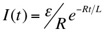

Note that in applying the loop theorem we make use of the fact that the induced emf across the inductance opposes the changing emf that causes it.
shown at right, where Imax is ε/R . Also shown is the time dependence of the voltage across the inductance.
the solution of which is

shown at right. In this figure I0 = ε/R.
This girl said she recognized me from the vegetarian club, but I'd never met herbivore.
Dr. C. L. Davis
Physics Department
University of Louisville
email: c.l.davis@louisville.edu